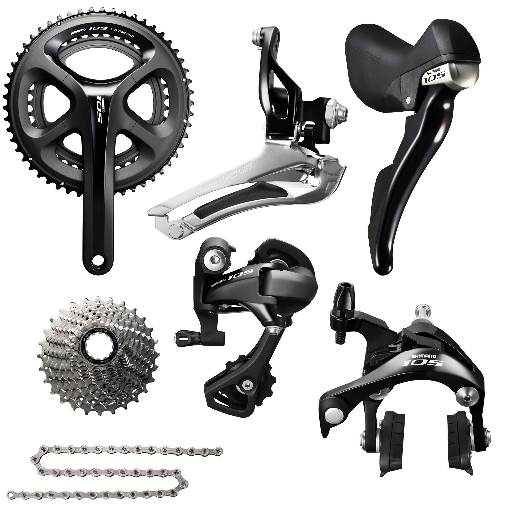
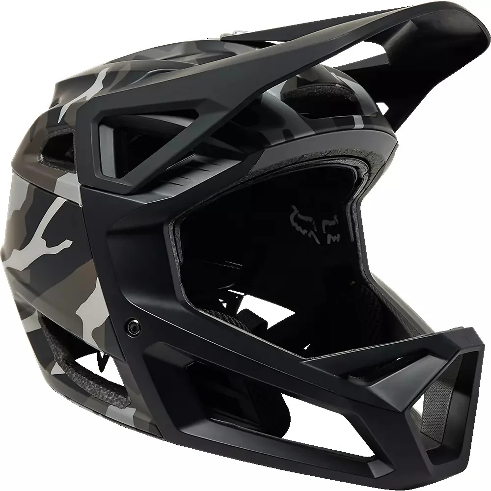
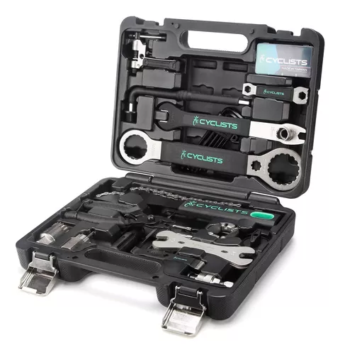

Nuestros Servicios
Reparación
Servicio profesional de reparación para todo tipo de bicicletas. Diagnóstico preciso y soluciones rápidas.
Customización
Transforma tu bicicleta con nuestros servicios de personalización. Desde pintura hasta modificaciones técnicas.
Mantenimiento
Servicios de mantenimiento preventivo para mantener tu bicicleta en las mejores condiciones.
Accesorios

Repuestos

Cascos

Luces

Herramientas
Cursos de Reparación
Curso Básico
Aprende los fundamentos de mantenimiento y reparación de bicicletas. Ideal para principiantes.
Duración: 35-60 horas
Curso Avanzado
Profundiza en técnicas de reparación, customización y diagnóstico de problemas complejos.
Duración: 2 semanas